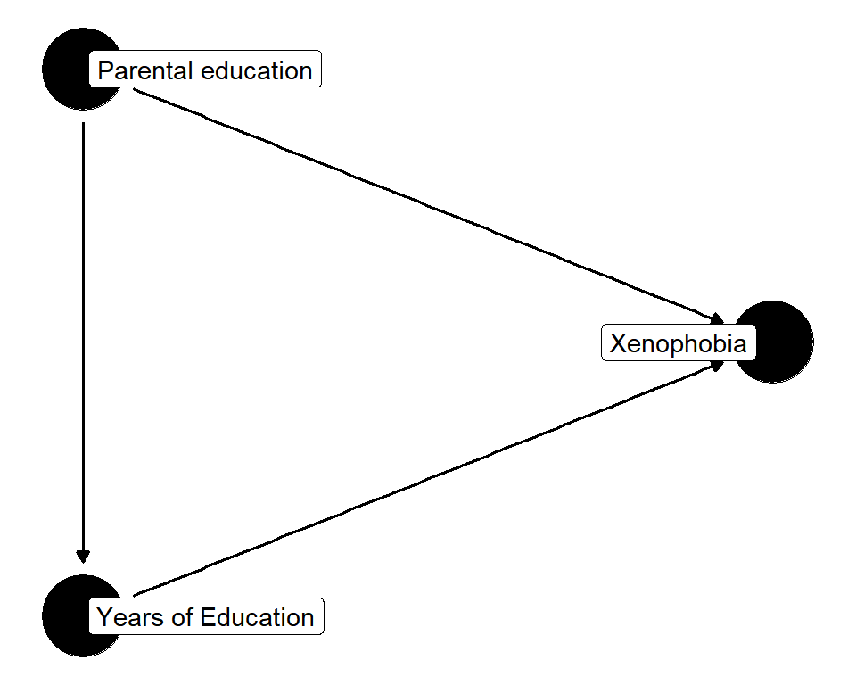
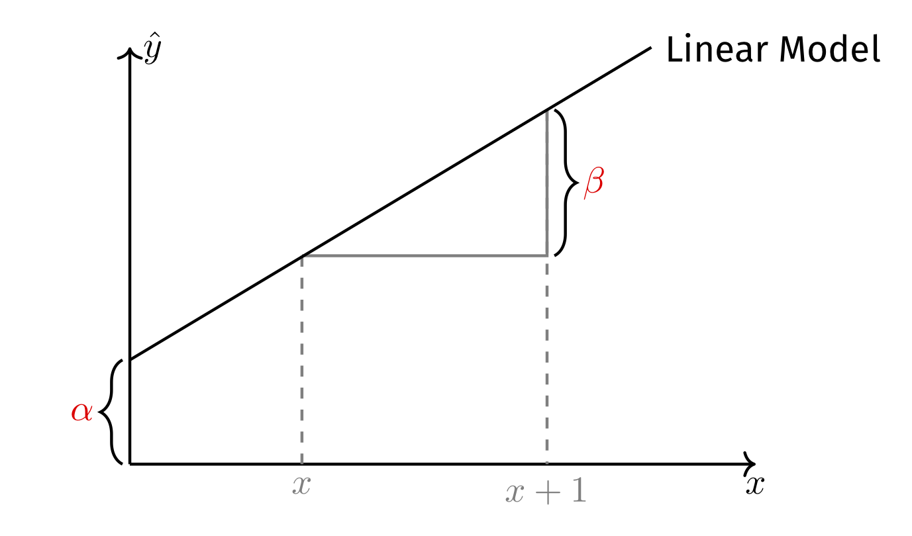
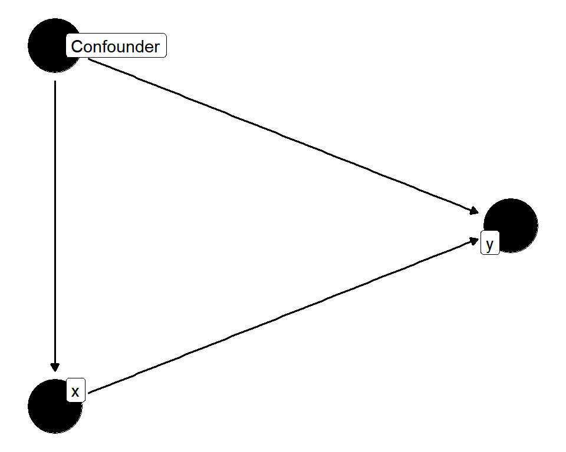

Linear OLS Regression I
Coming up with a model of xenophobia means: Can xenophobia (i.e., \(y\)) be expressed as a function (i.e., \(f()\)) of another variable (i.e., \(x\))?
\[\hat{y} = f(x)\] The two critical questions are thus:
You will need to find the answer to the second question in your research question, theory, and hypothesis.
Simple, but extremely versatile!
Now, the two critical questions have turned to:
You will need to find the answer to the second question in your research question, theory, and hypothesis.
\[\hat{y} = \alpha + \beta x\]

We find \(\alpha\) and \(\beta\) by choosing the one line that minimizes the residual sum of squares:
\[\begin{align*} \min \text{RSS} &= \min \sum_{i=1}^{n} e_{i}^{2} \\ &= \min \sum_{i=1}^{n} y_{i} - \hat{y_{i}} \\ &= \min \sum_{i=1}^{n} (y_{i} - (\alpha + \beta x_{i})^{2} \end{align*}\]
Note, how the residuals are defined only in terms of \(y\) and thereby differ fundamentally from those that PCA minimizes!
lm() function\[\hat{xeno}_i = \hat\alpha + \hat\beta \cdot eduyrs_i\]
is the line that \(\min \sum_{i=1}^{n} e_{i}^{2}\).
The weights argument allows you to use (post-stratification) weights.
But beware, lm() inference (e.g., standard errors, t-values, p-values, and confidence intervals) will be wrong, because weights introduce heteroscedasticity.
The weights argument allows you to use post-stratification weights.
But beware, lm() inference (e.g., standard errors, t-values, p-values) will be wrong, because weights introduce heteroscedasticity.
We thus need to estimate heteroscedasticity-robust standard errors. One comfortable possibility to do that is estimatr::lm_robust().

But is parental education the only confounder?
A confounder is a common cause of both one’s predictor \(x_{i1}\) (e.g., years of education) and of the outcome \(y_i\) (e.g., xenophobia). Counfounder bias is: \(\mathbb{E}(\tilde{\beta_{x_{1}}}) = \beta_{x_{1}} + \color{orange}{\beta_{x_{2}} \frac{\text{Cov}(x_{i1},x_{i2})}{\text{Var}(x_{i1})}}.\)
In the social sciences we use OLS to test theories about causal effects. It is thus important to rule out alternative explanations.
A simulation
Based on \(\mathbb{E}(\tilde{\beta_{x_{1}}}) = \beta_{x_{1}} + \color{orange}{\beta_{x_{2}} \frac{\text{Cov}(x_{i1},x_{i2})}{\text{Var}(x_{i1})}}\), what bias should we expect?

Call:
lm_robust(formula = y ~ x + Confounder, data = simu)
Standard error type: HC2
Coefficients:
Estimate Std. Error t value Pr(>|t|) CI Lower CI Upper DF
(Intercept) 0.002961 0.02213 0.1338 8.936e-01 -0.04045 0.04637 1997
x 0.514705 0.02256 22.8134 1.448e-102 0.47046 0.55895 1997
Confounder 0.488689 0.02398 20.3770 5.207e-84 0.44166 0.53572 1997
Multiple R-squared: 0.446 , Adjusted R-squared: 0.4454
F-statistic: 816.5 on 2 and 1997 DF, p-value: < 2.2e-16
Call:
lm_robust(formula = y ~ x, data = simu)
Standard error type: HC2
Coefficients:
Estimate Std. Error t value Pr(>|t|) CI Lower CI Upper DF
(Intercept) -0.01998 0.02426 -0.8238 4.102e-01 -0.06756 0.02759 1998
x 0.70410 0.02235 31.5058 3.168e-177 0.66027 0.74793 1998
Multiple R-squared: 0.3339 , Adjusted R-squared: 0.3335
F-statistic: 992.6 on 1 and 1998 DF, p-value: < 2.2e-16Factors are automatically treated as dummies, with the first level taken as reference. Thus if you want to change the reference, you need to recode the levels of the factor using the forcats package.
broom:tidy() turns a model object into a tibble containing coefficients and inference stats.
Good alternative to regression tables
Several models
Good alternative to regression tables
lm(): Estimate linear OLS regression. estimatr::lm_robust() estimates OLS regression with heteroscedasticity-robust standard errors (or cluster-robust standard errors if you wish).broom::tidy(): Return tibble of model results.textreg::texreg(), textreg::htmlreg(), and textreg::screenreg(): Create nicely-formatted (html, Word, ASCII, or Latex) tables of (one or several) regression models.dplyr::bind_rows(): Add the rows of a data frames to another data frame that has equal columns/variables.dplyr::bind_cols(): Add rows of another data frame to a data frame that has an equal number of rows. In contrast to a join/merge, no identifying key is specified. This can be helpful, but is also a bit dangerous!scale() z-standardizes variables. But sometimes it returns a matrix rather than a vector. Therefore it makes sense to always code scale(x) %>% as.numeric() to ensure you get an numeric vector out of it.